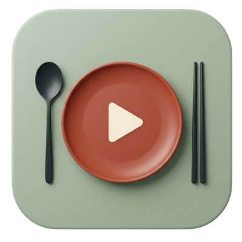
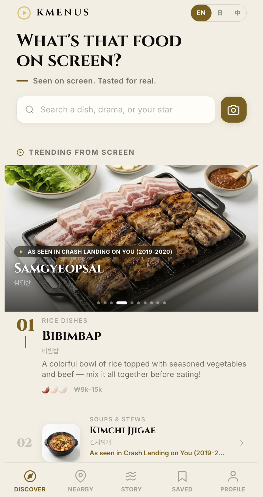
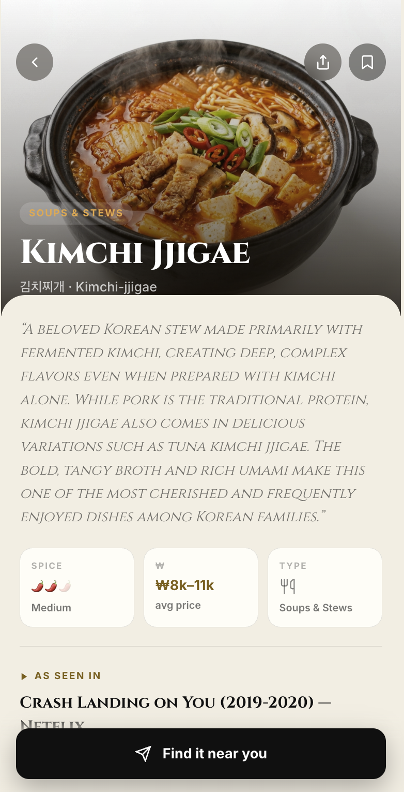
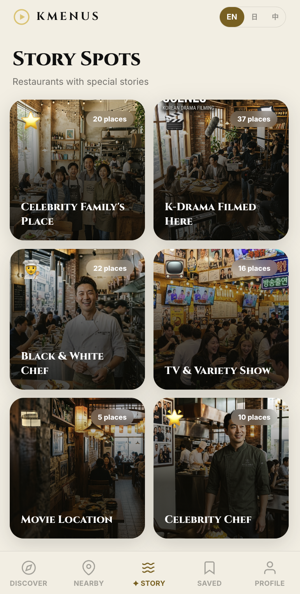

KMENUSto Table.
화면 속 그 한식, 진짜로 맛보다.
From Screen
to Table.
화면 속 그 한식, 진짜로 맛보다.
“저 드라마 속 음식,
뭔지·어디서 먹는지 모른다.”
외국인이 한국 친구에게 늘 물어요. "TV에서 봤는데, 이거 먹어보고 싶어!" K-콘텐츠로 한식을 보지만 “발견 → 이해 → 실제 경험”은 끊겨 있습니다.
발견의 단절
장면 속 음식의 이름조차 찾기 어렵다. 검색은 파편화돼 있고 외국어로는 더 막막하다.
맥락의 부재
왜 이 음식인지, 어떻게 먹는지 — 문화적 스토리가 빠져 단순 ‘메뉴’로만 소비된다.
연결의 부재
먹고 싶어도 ‘내 주변 어디서 파는지’ 알 길이 없다. 관심이 방문으로 이어지지 못한다.
한 흐름으로 잇는다 —
발견 · 스토리 · 연결.
화면에서 발견
드라마·예능에 나온 메뉴를 큐레이션 피드로. “화면 속 인기” 한식을 한눈에.
문화로 이해
등장 장면·역사·먹는 법까지. 음식을 ‘이야기’로 만들어 욕구를 끌어올린다.
내 주변으로
GPS로 근처 파는 곳을 찾고, 개인화 추천으로 관심을 곧바로 연결한다.
언어의 벽을 넘어 외국인이 ‘먹고 싶던’ 한식을 만족스러운 경험으로 — 나아가 함께 나누는 앱으로.
EN·日·中·한 동시 지원.
지금이 변곡점이다.
수요(글로벌 팬덤)와 정책(한식 세계화·인바운드 관광)이 동시에 열렸지만, 이를 ‘발견→문화→내 주변 연결’으로 묶은 공공·관광 인프라는 아직 없다. KMENUS가 그 빈자리를 채웁니다.
방문자는 늘고, 식도락은 1위.
작동하는 프로토타입.
데모가 곧 증거입니다.



- 온보딩 → 발견 → 스토리 → GPS로 내 주변 식당까지 전 플로우 구현 완료
- 프리미엄 ‘초대장’ 비주얼 — 절제된 골드·세리프 아이덴티티
- 4개 언어 동시 전환, PWA(설치형) 라이브: app.kmenus.com
- 음식, 장소, 스토리별 접근 방법과 개인화 서비스 제공
한 번 쓰면, 계속 쓰게 된다.
간편 로그인 · 공유
국가별 가장 많이 쓰는 방식(구글·애플·라인·위챗)으로 1초 가입. 진입 장벽 0.
사진으로 음식 인식
카메라로 찍으면 ‘이게 무슨 음식?’ 바로 확인. 화면·메뉴판·접시 무엇이든.
없는 메뉴는 문의
데이터 없는 식당·음식은 바로 문의. 사용자와 식당이 소통하며 데이터가 자란다.
기록 · 보관
다녀온 매장과 관심 메뉴를 나만의 컬렉션으로 저장하고 모은다.
함께 나누기
지인·가족과 맛집과 메뉴를 공유. 경험이 곧 입소문이 된다.
지속 회원 관리
취향 기반 추천·알림으로 다시 찾게 만드는 리텐션 엔진.
크고, 지금 열리는 시장.
진입은 좁고 뜨거운 거점(서울 인바운드)에서, 확장은 같은 데이터·같은 다국어 엔진으로 해외 한식 시장까지.
관심을 공공·관광 가치로 — 4개의 지속 동력.
식당 광고 · 노출
입점 식당의 프리미엄 노출·‘화면 속 그 메뉴’ 스폰서 태그. 소상공인·지역 식당의 매출로 이어진다.
개인화 · 데이터
취향·행동 기반 추천과 콘텐츠–메뉴 매핑 데이터. 정책·관광 기관에 한식 소비 인사이트를 제공.
카테고리 확장 가능성
(추후) 외국인 대상 굿즈·식품·여행 연계 등 인접 카테고리 확대 등으로 한국 방문의 만족도와 편리함을 극대화.
관광 · 공공 협력
정부·지자체·관광기관 제휴 — 콘텐츠·데이터·캠페인 협업으로 방한 경험을 함께 설계.
따라오기 어려운 세 가지.
콘텐츠–메뉴 매핑 데이터
‘어떤 작품의 어떤 장면 → 어떤 메뉴 → 어떤 식당’을 잇는 독자 데이터셋. 쌓일수록 강해지는 해자.
멀티랭귀지 · 현지화
EN·日·中·한 동시 설계. 글로벌 팬과 관광객을 번역 장벽 없이 흡수 — 후발주자의 진입비용을 높인다.
관광·공공 파트너십 선점
정부·지자체·관광기관과의 협력·데이터 채널을 먼저 확보 — 후발주자가 단기간에 복제하기 어려운 신뢰·접근 우위.
거점에서 글로벌로.
랜드마크 거점
외국인이 가장 많이 찾는 랜드마크 주변부터. 핵심 관광지의 식당·메뉴를 집중 큐레이션하고 매핑 데이터를 축적한다.
전국 모세혈관
전국 거의 모든 지역으로. 숙소 근처 작은 식당까지 촉촉히 담아, 어디서든 ‘화면 속 그 메뉴’를 찾게 한다.
글로벌 확장
검증된 모델을 그대로 해외로. 같은 다국어·데이터 엔진으로 전 세계 K-푸드 시장을 연결한다.
콘텐츠가 새 시즌을 낼 때마다 마케팅 비용 없이 신규 수요가 유입되고, 데이터 밀도가 단계마다 깊어진다.
단순 연결을 넘어, 데이터로.
KMENUS는 소비의 맥락을 구조화된 데이터로 쌓습니다 — 그 자체가 자산이 되는 플랫폼.
음식점 · 광고주에게
수요 데이터를 제공해 더 좋은 메뉴와 음식을 개발하도록 — 감이 아닌 근거로 의사결정을 돕습니다.
외국인 관광객에게
니즈를 읽어 더 편리한 여행으로. 즐기고, 마무리하고, 후기를 남기는 하나의 장소가 됩니다.
단순 연결을 넘어 데이터 분석·적용까지 — 발전 가능성은 무궁무진합니다.
1인이 만들고,
함께 키운다.
외국계 기업 CEO 출신의 식품 전문가. 글로벌 식품 비즈니스 경험을 바탕으로 제품·전략을 직접 이끌고, 작동하는 프로토타입을 구현해 실행력을 증명.
함께 만들 동력
정부·지자체·관광기관과 식당 네트워크를 본 지원으로 연결해, 1인 창업의 한계를 공공·관광 파트너십으로 보완한다.
AI를 적극 활용해 1인 체제로도 빠르게 만들고 검증합니다. 필요 역량(개발·BD·콘텐츠)은 본 투자/지원을 통해 초기 팀으로 확장합니다.
함께 ‘화면에서 식탁으로’.
정부지원·액셀러레이팅을 통해 MVP를 출시하고, 랜드마크 거점에서 방한 외국인의 한식 경험 만족도와 재방문을 높이는 첫 트랙션을 만듭니다.
- 제품 개발 · 출시
- 콘텐츠–메뉴 데이터 구축
- 초기 팀 합류(개발·BD)
- MVP 정식 출시
- 랜드마크 식당 파트너 확보
- 방한 만족도·재방문 지표
- 한식 세계화 가속
- 해외 관광객 유치·만족도
- 소상공인·지역 상권 활성화